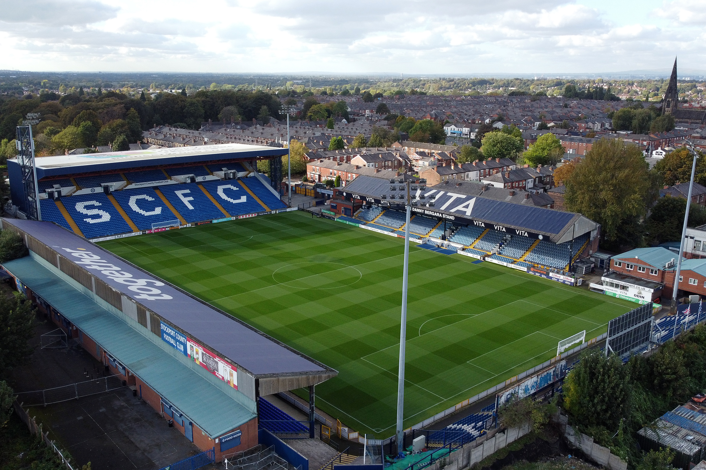

社区 · 2026-05-21
埃奇利公园与本地文化
埃奇利公园不只是比赛场地，也是斯托克波特郡球迷身份的一部分。球场、街区和看台文化共同构成了 County 的日常。
这个栏目会继续补充主场历史、比赛日动线、球迷歌曲和城市背景。
返回新闻列表
社区 · 2026-05-21
埃奇利公园不只是比赛场地，也是斯托克波特郡球迷身份的一部分。球场、街区和看台文化共同构成了 County 的日常。
这个栏目会继续补充主场历史、比赛日动线、球迷歌曲和城市背景。
返回新闻列表